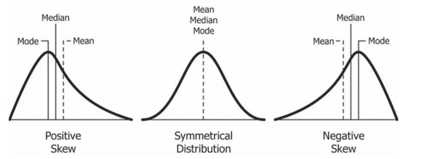

install.packages("here")Central Tendency
PSYC 2020-A01 / PSYC 6022-A01 | 2025-08-29 | Lab 2
Outline
- Assignment 1 Review
- Extra Credit
- R Projects
- Central Tendency Review
- R Functions
- Central Tendency in R
Learning objectives:
R: Projects, functions
Statistics: Central tendency
Housekeeping
Grading Display Modification
Moving from 0–100% to 10 points each
Top 10 lab assignments * 10 points each = 100%
Does not change anything about the weight!
RStudio
On lab computer
COS-GPU-2023
Assignment 1 Review
Check Working Directory
getwd()
Plotting
Make sure to select the right variable for plotting!
plot(iris$Sepal.Length, iris$Sepal.Width,
col = "#E50046")
plot(iris$Petal.Length, iris$Petal.Width,
col = "#C7DB9C")

Extra Credit
posit::conf(2025)
R Projects
RStudio’s way of helping organizing files, scripts, etc.
I strongly recommend this!!
○ File > New Project
○ If you don’t already have a folder associated with this class, “New Directory”
○ If you do, “Existing Directory”
All R Scripts under the same project share a working directory
Setting Working Directory
getwd() tells us the location of our working directory
setwd("C:/Users/Desktop/R Example") sets the working directory
Or, here::here() lets us do relative directories (my favorite!)
○ Just use the command at the top of the file to see where your directory is
○ Do need to install the here package first
Then, when you need a file, you can reference it relatively
here::here()[1] "C:/Users/jessi/OneDrive - Georgia Institute of Technology/Courses/GTA/PSYC2020L"here::here("lab 2", "cat.png")[1] "C:/Users/jessi/OneDrive - Georgia Institute of Technology/Courses/GTA/PSYC2020L/lab 2/cat.png"Review of Central Tendency!
Mean: Sum of all values divided by the total number of values
Median: When sorted lowest to highest, the middle value
Mode: The value that appears most often
Central Tendency Practice
Given this dataset:
c(0, 2, 2, 4)[1] 0 2 2 4What is the mean? 2
What is the median? 2
What is the mode? 2
Central Tendency Practice
Given this dataset:
c(0, 1, 2, 3)[1] 0 1 2 3What is the mean? 1.5
What is the median? 1.5
What is the mode? No mode!
R Functions
A function performs some operation on an input and produces some output
Saw this last week
head(iris) Sepal.Length Sepal.Width Petal.Length Petal.Width Species
1 5.1 3.5 1.4 0.2 setosa
2 4.9 3.0 1.4 0.2 setosa
3 4.7 3.2 1.3 0.2 setosa
4 4.6 3.1 1.5 0.2 setosa
5 5.0 3.6 1.4 0.2 setosa
6 5.4 3.9 1.7 0.4 setosaWhat is the function? Input? Output?
Central Tendency in R: Mean
We can calculate central tendencies in two ways:
Given this dataset, calculate the mean
c(2, 3, 12, 4, 4)[1] 2 3 12 4 4By hand (computer)
# let's calculate the mean!
With the
mean(x) function
○
x = vector of data
# let's calculate the mean!
Central Tendency in R: Median
Given this dataset, calculate the median
c(2, 3, 12, 4, 4)[1] 2 3 12 4 4By hand (computer)
# let's calculate the median!
With the
median(x) function
○
x = vector of data
# let's calculate the median!
Central Tendency in R: Mode
Given this dataset, calculate the mode
c(2, 3, 12, 4, 4)[1] 2 3 12 4 4With the mode() function
# let's calculate the mode!
Doesn’t work :(
Have to create our own
R Functions
We’ve seen some built-in R functions (e.g., mean(), median()), but we can also make our own
function_name <- function(argument) {
do some stuff
return(this stuff)
}ⓘ Don’t actually need to call return(); R will automatically return the last expression
Then, you can call the function
function_name(specific_argument)
To keep the results, make sure to assign them to some variable
very_important_results <- function_name(specific_argument)
R Functions
# write a function that takes in two numbers,
# adds them together, and returns the sum!
# write a function that takes in two vectors,
# puts them in a dataframe,
# and returns the dataframe!
Let’s go back to finding the mode
Central Tendency in R: Mode
Given this dataset, calculate the mode
c(2, 3, 12, 4, 4)[1] 2 3 12 4 4mode_func <- function(x) {
sort(table(x), decreasing = T)[1]
}How does this work?
# let's calculate the mode!
Descriptive Statistics in R
Takes time to look at all these for a lot of variables, even with functions
The summary(object) function provides us a quick overview of this information
○
object = for our purposes, a dataframe
# let's get descriptive statistics for the iris dataset
What all do we get?
○ Minimum and maximum
○ 1st quantile, median, 3rd quantile
○ Mean
Visualizations!
Summary statistics are great, but don’t trust them alone!
What do you think a dataset with these descriptives would look like?
X_mean <- 54.26
Y_mean <- 47.83
X_sd <- 16.76
Y_sd <- 26.93
cor <- -0.06Visualizations!

Visualizations!

Visualizations
Don’t rush: graph your data!
What should graphs do?
○ Show the data
○ Draw the reader primarily to the data (not the graphical effects)
○ Avoid distorting the data
○ Present many numbers with minimum ink
○ Make large data sets coherent
○ Encourage the reader to compare different pieces of data
Visualizations: Histograms
An example of (simulated) SAT scores
What do we see here?
○ Outliers at zero! Not a possible SAT score
○ Negatively skewed: more data on the left than on the right

Skew

Positive skew, right-tailed
The mass of the distribution is concentrated on the left of the figure
Negative skew, left-tailed
The mass of the distribution is concentrated on the right of the figure
Skewness Demonstration
Let’s Do Some Visualization
Base R Graphics
R has some plotting features built in—we saw this last week
plot(iris$Sepal.Length, iris$Sepal.Width)
What do we think about this?
Base R Graphics
Better… (thanks, ChatGPT)

plot(iris$Sepal.Length, iris$Sepal.Width,
pch = 19, # solid circles
col = "#377EB8", # pleasant blue
cex = 1.3, # slightly larger points
xlab = "Sepal Length", # cleaner label
ylab = "Sepal Width",
main = "Sepal Length vs Sepal Width",
cex.lab = 1.2, # bigger axis labels
cex.main = 1.4, # bigger title
font.main = 2) # bold titleWe will learn a few plots in base R plotting, and then we will learn a better way of making plots: ggplot2
Let’s Do Some Visualization
Base R Graphics: Histogram
hist() function
Required arguments:
○
x = vector (variable) you want to plot (remember the $ function!)
Optional arguments:
○
breaks = bin count
○
main = title
○
xlab = label for x-axis
○
ylab = label for y-axis
○
col = color for bars
○
xlim = range for x-axis
○
ylim = range for y-axis
○
prob = T/F, proportion instead of frequency
If you do not set specific values for non-essential subarguments, it will use the default

hist(iris$Sepal.Length,
breaks = 7,
main = "Histogram of Sepal Length",
xlab = "Sepal Length",
xlim = c(3, 9),
border = "white",
col = "skyblue")Let’s Do Some Visualization
Base R Graphics: Histogram
An important decision for histograms is this number (or width) of bins
Specified with the breaks argument


Let’s Do Some Visualization
Base R Graphics: Histogram
An important decision for histograms is this number (or width) of bins
Specified with the breaks argument


Let’s Do Some Visualization
Base R Graphics: Histogram
If we could make the bins infinitesimally small, we could get a probability density function (PDF)

dat <- data.frame(x = rnorm(1000))
cowplot::plot_grid(
plotlist = list(
ggplot(dat, aes(x = x)) +
geom_histogram(aes(y = after_stat(density)),
bins = 10) +
coord_cartesian(xlim = c(-4, 4), ylim = c(0, .5)) +
labs(y = "Proportion") +
cowplot::theme_cowplot(),
ggplot(dat, aes(x = x)) +
geom_histogram(aes(y = after_stat(density)),
bins = 50) +
coord_cartesian(xlim = c(-4, 4), ylim = c(0, .5)) +
labs(y = "Proportion") +
cowplot::theme_cowplot(),
ggplot(dat, aes(x = x)) +
geom_histogram(aes(y = after_stat(density)),
bins = 100) +
coord_cartesian(xlim = c(-4, 4), ylim = c(0, .5)) +
labs(y = "Proportion") +
cowplot::theme_cowplot(),
ggplot(dat, aes(x = x)) +
geom_histogram(aes(y = after_stat(density)),
bins = 100, alpha = .8) +
stat_function(inherit.aes = FALSE, fun = dnorm,
n = 101, args = list(mean = 0, sd = 1),
xlim = c(-4, 4),
color = "grey35", linewidth = 2) +
coord_cartesian(xlim = c(-4, 4), ylim = c(0, .5)) +
labs(y = "Proportion") +
cowplot::theme_cowplot()
),
nrow = 1)Assignment 2
- Basic R functions
- Descriptive statistics